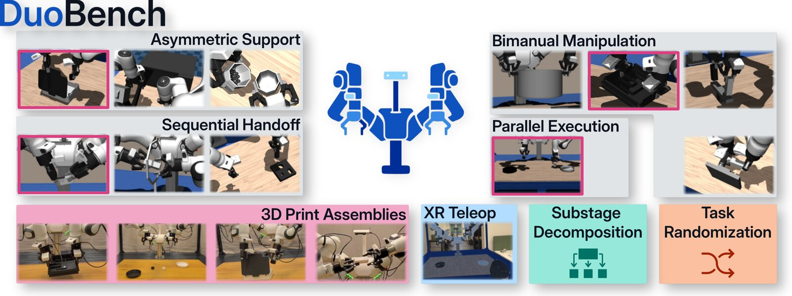

DuoBench: A Reproducible Benchmark for Bimanual Manipulation in Simulation and the Real World
Two-armed manipulation is hard to compare across labs because tasks, hardware and metrics all differ. DuoBench offers 11 bimanual tasks on the Franka Research 3 Duo, covering asymmetric support, joint manipulation, sequential handoff and parallel execution. All tasks run as MuJoCo Gymnasium environments, and four can be rebuilt in the real world from 3D-printed parts. A stage-based evaluation shows where a policy fails, not just whether it fails.
- Includes 750 teleoperated demonstrations (443k frames) across simulation and real tasks
- ACT, π0.5 and X-VLA reach only 7–13% overall success, so the benchmark is far from solved
- Mixing simulated and real data raises π0.5 on the real Transfer-Cube task from 40% to 53%
@misc{duobench,
title={{DuoBench}: A Reproducible Benchmark for Bimanual Manipulation in Simulation and the Real World},
author={Tobias J{\"u}lg and Seongjin Bien and Simon Hilber and Yannik Blei and Pierre Krack and Maximilian Li and Sven Parusel and Rudolf Lioutikov and Florian Walter and Wolfram Burgard},
year={2026},
eprint={2606.11901},
archivePrefix={arXiv}
}